Financial inclusion plays a vital role in promoting economic stability and growth, especially in developing economies like Tanzania. Access to financial services empowers individuals, enabling them to save, borrow, insure, and invest, ultimately fostering resilience against economic shocks. Despite progress, challenges remain in ensuring that financial services reach all population segments, particularly those in rural and economically disadvantaged regions. Factors such as geographic location, socioeconomic status, and income sources contribute to disparities in financial access across Tanzania’s diverse regions.
The FinScope Tanzania 2023 survey provides comprehensive data on financial service uptake and barriers faced by Tanzanian adults. This survey offers insights into various financial services, including banking, mobile money, insurance, and microfinance, as well as informal financial mechanisms. Given Tanzania’s diverse agro-economic zones and urban-rural divide, financial inclusion determinants are expected to vary significantly by location. To capture these spatial dynamics, this study employs Geographically Weighted Regression (GWR), a statistical technique that models spatially varying relationships between variables. By applying GWR, this analysis aims to uncover regional patterns in financial inclusion, thereby identifying localized factors influencing access to financial services across Tanzania.
1.2 Objectives
The main objectives of this exercise are:
To assess the spatial variability of financial inclusion across Tanzania, identifying how geographic location influences access to and usage of financial services.
To examine relationships between financial inclusion and socio-economic variables such as income sources, urbanization level, and economic activity. This includes understanding the role of mobile money, banking, and informal financial services across different regions.
To apply and interpret GWR in analyzing financial inclusion by generating regional coefficients that highlight spatial patterns in the data, helping to pinpoint areas where specific financial services are more or less accessible.
To produce visualizations of GWR outputs, including maps of local coefficients and R-squared values, to clearly communicate findings on regional disparities in financial inclusion.
By achieving these objectives, this analysis will contribute to a more nuanced understanding of financial inclusion in Tanzania, offering actionable insights for policymakers, financial service providers, and development organizations to address gaps in financial access.
2 Data Wrangling
2.1 Loading Packages
To prepare and analyze spatial data for Geographically Weighted Regression (GWR), we will use the following packages, which offer tools for geospatial data handling, data manipulation, visualization, and statistical analysis.
Click to view code
pacman::p_load(sf, spgwr, tmap, tidyverse, dplyr, ggplot2, GWmodel, readxl, knitr)package_info <-data.frame(Package =c("sf", "spgwr", "tmap", "tidyverse", "dplyr", "ggplot2", "readxl", "knitr", "GWmodel" ),Description =c("For importing, managing, and handling geospatial data, including shapefiles and CRS transformations.","For conducting Geographically Weighted Regression (GWR) analysis to examine spatially varying relationships.","For thematic mapping and creating visualizations to display spatial data and GWR results.","For data wrangling and analysis, providing a cohesive set of tools for data science tasks, including ggplot2 and tidyr.","For efficient data manipulation, including filtering, selecting, and summarizing data.","For creating additional custom and publication-ready visualizations.","For importing Excel files, useful for reading metadata or data dictionaries.","For dynamic report generation using LaTeX, HTML, and Markdown.","For conducting Geographically Weighted Regression (GWR) analysis to examing the model" ))knitr::kable(package_info, col.names =c("Package", "Description"))
Package
Description
sf
For importing, managing, and handling geospatial data, including shapefiles and CRS transformations.
spgwr
For conducting Geographically Weighted Regression (GWR) analysis to examine spatially varying relationships.
tmap
For thematic mapping and creating visualizations to display spatial data and GWR results.
tidyverse
For data wrangling and analysis, providing a cohesive set of tools for data science tasks, including ggplot2 and tidyr.
dplyr
For efficient data manipulation, including filtering, selecting, and summarizing data.
ggplot2
For creating additional custom and publication-ready visualizations.
readxl
For importing Excel files, useful for reading metadata or data dictionaries.
knitr
For dynamic report generation using LaTeX, HTML, and Markdown.
GWmodel
For conducting Geographically Weighted Regression (GWR) analysis to examing the model
2.2 Data Preparation
We will use the FinScope Tanzania 2023 data and the geoBoundaries Tanzania district shapefile for this analysis. This section includes steps to import, clean, and prepare the data for Geographically Weighted Regression.
Survey Data: Import and clean the FinScope survey data, focusing on financial inclusion indicators, socioeconomic variables, and regional identifiers.
Click to view code
survey_data <-read.csv("data/FinScope Tanzania 2023_Individual Main Data_FINAL.csv")# summary(survey_data)# Select relevant columns for analysissurvey_data <- survey_data %>%select(reg_name, RU, MZ, MM, BANKED, MFI, PENSION, INSURANCE, SACCO, OTHER_FORMAL, OVERALL_FORMAL, IncomeMain, BusO, DEDICATED_FARMER, SMALLHOLDER_FARMER, population_wt, fasx, INFORMAL)# Check the cleaned datahead(survey_data)
reg_name RU MZ MM BANKED MFI PENSION
1 Mwanza Rural Mainland MM Not Banked Not MFI Not PENSION
2 Kagera Rural Mainland Not MM Not Banked Not MFI Not PENSION
3 Mbeya Other urban Mainland MM Not Banked Not MFI Not PENSION
4 Dodoma Other urban Mainland MM Not Banked Not MFI Not PENSION
5 Dar es Salaam Dar es Salaam Mainland MM Not Banked Not MFI Not PENSION
6 Singida Other urban Mainland MM Not Banked Not MFI Not PENSION
INSURANCE SACCO OTHER_FORMAL OVERALL_FORMAL IncomeMain
1 0 Not SACCO OTHER_FORMAL OVERALL_FORMAL Farmers and fishers
2 0 Not SACCO OTHER_FORMAL OVERALL_FORMAL Farmers and fishers
3 INSURANCE Not SACCO OTHER_FORMAL OVERALL_FORMAL Piece work/casual labor
4 0 Not SACCO OTHER_FORMAL OVERALL_FORMAL Traders - non-agricultural
5 0 Not SACCO OTHER_FORMAL OVERALL_FORMAL Farmers and fishers
6 0 Not SACCO OTHER_FORMAL OVERALL_FORMAL Piece work/casual labor
BusO DEDICATED_FARMER SMALLHOLDER_FARMER population_wt
1 nor Not Dedicated farmer Not Smallholder farmer 3191.110
2 nor Not Dedicated farmer Not Smallholder farmer 3675.482
3 nor Not Dedicated farmer Not Smallholder farmer 2043.709
4 Business owners Not Dedicated farmer Not Smallholder farmer 4003.168
5 nor Not Dedicated farmer Not Smallholder farmer 2618.941
6 nor Not Dedicated farmer Not Smallholder farmer 4680.350
fasx INFORMAL
1 Other formal non-bank INFORMAL incl SACCO AND CMG RISK CONTRIBUTIONS
2 Other formal non-bank INFORMAL incl SACCO AND CMG RISK CONTRIBUTIONS
3 Other formal non-bank INFORMAL incl SACCO AND CMG RISK CONTRIBUTIONS
4 Other formal non-bank INFORMAL incl SACCO AND CMG RISK CONTRIBUTIONS
5 Other formal non-bank INFORMAL incl SACCO AND CMG RISK CONTRIBUTIONS
6 Other formal non-bank Not INFORMAL
# Save csvwrite.csv(survey_data, "data/csv/survey_data.csv", row.names =FALSE)write.csv(region_proportions, "data/csv/region_proportions", row.names =FALSE)
We’ll use the district boundary shapefile (geoBoundaries-TZA-ADM2.shp) to perform spatial analysis. This shapefile represents Tanzania’s districts and will be joined with the survey data.
Since the district boundaries shapefile has MULTIPOLYGON geometries, we will convert them to POLYGON geometries to ensure compatibility with our analysis. We’ll also add a new column for the area of each polygon, which could be useful for weighting or further spatial analysis.
Click to view code
# Load and transform the ADM1 shapefileregions <-st_read("data/ADM1/geoBoundaries-TZA-ADM1.shp") %>%st_transform(crs =32737) # Using UTM Zone 37S for Tanzania
Reading layer `geoBoundaries-TZA-ADM1' from data source
`/Applications/SMU/S3/ISSS626 - Geo/ISSS-626 ZOUJIAXUN/Take-home_Ex/Take-home_Ex03/data/ADM1/geoBoundaries-TZA-ADM1.shp'
using driver `ESRI Shapefile'
Simple feature collection with 30 features and 5 fields
Geometry type: MULTIPOLYGON
Dimension: XY
Bounding box: xmin: 29.32698 ymin: -11.76125 xmax: 40.44556 ymax: -0.9854812
Geodetic CRS: WGS 84
Click to view code
# Convert MULTIPOLYGON to individual POLYGON components and calculate arearegions_polygons <- regions %>%st_cast("POLYGON") %>%mutate(area =st_area(.))# Group by `shapeName` to ensure each region is represented as a single MULTIPOLYGONregions_cleaned <- regions_polygons %>%group_by(shapeName) %>%summarize(geometry =st_union(geometry), .groups ='drop')# Check the result by plottingplot(st_geometry(regions_cleaned))
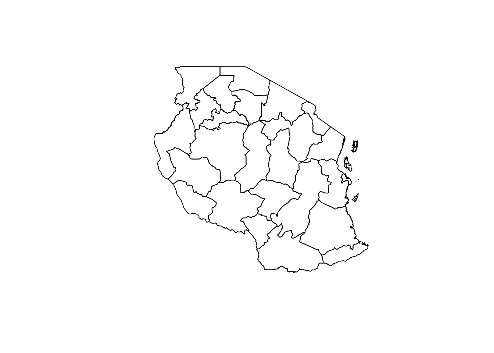
Merging Survey and Geospatial Data
Now, with the POLYGON geometries and area calculated, we can merge this geospatial data with the survey data to create a combined dataset for the GWR analysis.
Click to view code
# Merge the survey data with the cleaned region shapefile using `shapeName` and `reg_name`combined_data <- regions_cleaned %>%left_join(region_proportions, by =c("shapeName"="reg_name"))# Check the combined datasetsummary(combined_data)
shapeName geometry prop_BANKED prop_MFI
Length:30 MULTIPOLYGON : 6 Min. :0.1092 Min. :0.01116
Class :character POLYGON :24 1st Qu.:0.1321 1st Qu.:0.04930
Mode :character epsg:32737 : 0 Median :0.1984 Median :0.06984
+proj=utm ...: 0 Mean :0.2015 Mean :0.06676
3rd Qu.:0.2222 3rd Qu.:0.08000
Max. :0.4370 Max. :0.15854
NA's :5 NA's :5
prop_INSURANCE prop_SACCO prop_OTHER_FORMAL prop_OVERALL_FORMAL
Min. :0.02308 Min. :0.000000 Min. :0.5692 Min. :0.5810
1st Qu.:0.07500 1st Qu.:0.004184 1st Qu.:0.6692 1st Qu.:0.6769
Median :0.10460 Median :0.006757 Median :0.7619 Median :0.7711
Mean :0.10691 Mean :0.012092 Mean :0.7381 Mean :0.7448
3rd Qu.:0.13380 3rd Qu.:0.014228 3rd Qu.:0.7841 3rd Qu.:0.7950
Max. :0.21545 Max. :0.059859 Max. :0.9431 Max. :0.9451
NA's :5 NA's :5 NA's :5 NA's :5
Click to view code
str(combined_data)
sf [30 × 8] (S3: sf/tbl_df/tbl/data.frame)
$ shapeName : chr [1:30] "Arusha" "Dar es Salaam" "Dodoma" "Geita" ...
$ geometry :sfc_GEOMETRY of length 30; first list element: List of 1
..$ : num [1:208, 1:2] 322668 320915 317794 314638 313041 ...
..- attr(*, "class")= chr [1:3] "XY" "POLYGON" "sfg"
$ prop_BANKED : num [1:30] 0.298 0.437 0.198 0.152 0.222 ...
$ prop_MFI : num [1:30] 0.1048 0.1585 0.0951 0.0365 0.0711 ...
$ prop_INSURANCE : num [1:30] 0.137 0.215 0.18 0.059 0.138 ...
$ prop_SACCO : num [1:30] 0.00317 0.01423 0.01215 0.00281 0.00444 ...
$ prop_OTHER_FORMAL : num [1:30] 0.784 0.943 0.773 0.753 0.724 ...
$ prop_OVERALL_FORMAL: num [1:30] 0.784 0.945 0.773 0.753 0.738 ...
- attr(*, "sf_column")= chr "geometry"
- attr(*, "agr")= Factor w/ 3 levels "constant","aggregate",..: NA NA NA NA NA NA NA
..- attr(*, "names")= chr [1:7] "shapeName" "prop_BANKED" "prop_MFI" "prop_INSURANCE" ...
Remove rows with NA values in the relevant columns
Create choropleth maps to visualize the distribution of each financial inclusion indicator across regions.
Click to view code
tmap_mode("plot") # Define each map individuallymap1 <-tm_shape(combined_data) +tm_polygons("prop_BANKED", title ="Proportion of Banked Population",palette ="Blues", style ="quantile") +tm_layout(main.title ="Banked Population by Region", main.title.size =1)map2 <-tm_shape(combined_data) +tm_polygons("prop_MFI", title ="Proportion of MFI Users",palette ="Purples", style ="quantile") +tm_layout(main.title ="MFI Users by Region", main.title.size =1)map3 <-tm_shape(combined_data) +tm_polygons("prop_INSURANCE", title ="Proportion of Insurance Users",palette ="Greens", style ="quantile") +tm_layout(main.title ="Insurance Users by Region", main.title.size =1)map4 <-tm_shape(combined_data) +tm_polygons("prop_SACCO", title ="Proportion of SACCO Users",palette ="Oranges", style ="quantile") +tm_layout(main.title ="SACCO Users by Region", main.title.size =1)map5 <-tm_shape(combined_data) +tm_polygons("prop_OTHER_FORMAL", title ="Proportion of Other Formal Financial Users",palette ="Reds", style ="quantile") +tm_layout(main.title ="Other Formal Financial Users by Region", main.title.size =1)map6 <-tm_shape(combined_data) +tm_polygons("prop_OVERALL_FORMAL", title ="Proportion of Overall Formal Financial Inclusion",palette ="YlGnBu", style ="quantile") +tm_layout(main.title ="Overall Formal Financial Inclusion by Region", main.title.size =1)tmap_arrange(map1, map2, map3, map4, map5, map6, ncol =3, nrow =2)
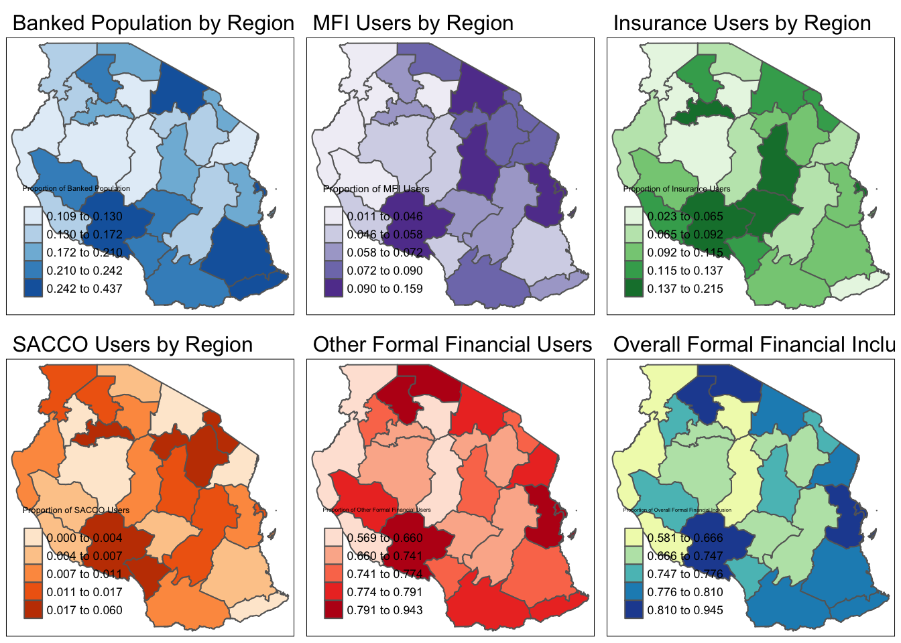
Note
Urban-Rural Divide: There is a clear disparity in financial service uptake between urban and rural regions, with urbanized areas generally showing higher access to formal financial services.
Role of MFIs and SACCOs: In areas where formal banking is limited, microfinance institutions and SACCOs provide crucial financial services, suggesting that these institutions are integral to financial inclusion strategies in rural and semi-urban areas.
Regional Variations in Financial Inclusion: Each indicator shows distinct spatial patterns, emphasizing that financial inclusion in Tanzania is regionally diverse. This diversity likely reflects variations in socioeconomic conditions, regional policies, and accessibility of financial infrastructure.
3.2 Preparing for Geographically Weighted Regression (GWR)
Use GWR to explore the spatial variability in financial inclusion, the prop_* columns can be used as dependent or independent variables in model.
Click to view code
# Set up coordinates and calculate bandwidthcoords <-st_coordinates(st_centroid(combined_data))gwr_bandwidth <-bw.gwr(prop_BANKED ~ prop_MFI + prop_INSURANCE + prop_SACCO, data = combined_data, approach ="AICc", kernel ="bisquare", adaptive =TRUE)
Adaptive bandwidth (number of nearest neighbours): 23 AICc value: -51.36172
Adaptive bandwidth (number of nearest neighbours): 22 AICc value: -49.6069
Adaptive bandwidth (number of nearest neighbours): 24 AICc value: -53.01621
Adaptive bandwidth (number of nearest neighbours): 24 AICc value: -53.01621
Click to view code
# Run GWR model without specifying `coords`, as they are embedded in `combined_data`gwr_model <-gwr.basic(prop_BANKED ~ prop_MFI + prop_INSURANCE + prop_SACCO, data = combined_data, bw = gwr_bandwidth, kernel ="bisquare", adaptive =TRUE)
Check the summary of the GWR model to view the results, including coefficients, local R-squared values, and diagnostics.
Click to view code
summary(gwr_model)
Length Class Mode
GW.arguments 11 -none- list
GW.diagnostic 8 -none- list
lm 14 lm list
SDF 19 sf list
timings 5 -none- list
this.call 6 -none- call
Ftests 0 -none- list
The coefficients and local R-squared values can help to understand the spatial variation in the relationship between prop_BANKED and your predictors.
Click to view code
# Extract coefficient estimates and local R-squared valuesgwr_results <-as.data.frame(gwr_model$SDF) # Convert Spatial Data Frame to regular Data Framehead(gwr_results) # View first few rows to check the data structure
tm_shape(combined_data) +tm_polygons("prop_MFI_coef", title ="GWR Coefficient for MFI Proportion",palette ="RdBu", style ="quantile") +tm_layout(main.title ="Spatial Variation of GWR Coefficient for MFI Proportion", main.title.size =1)
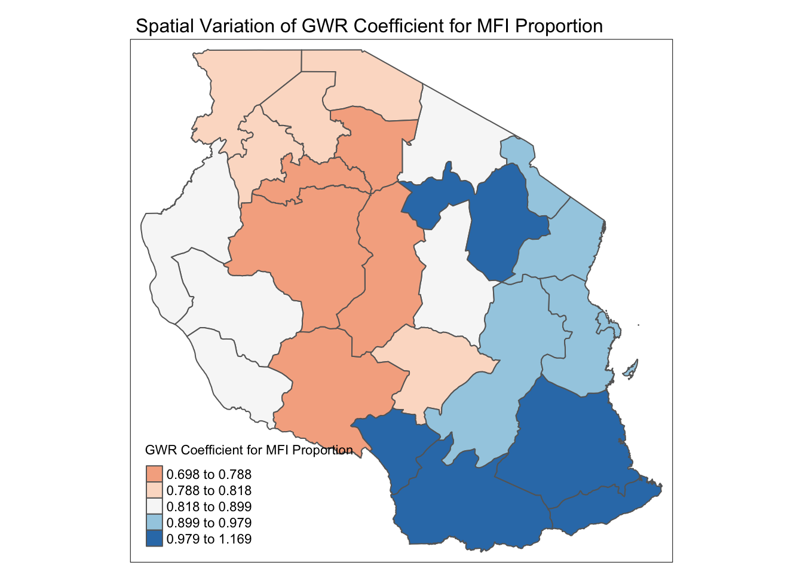
Interpretation: This map shows the spatial variation in the relationship between the proportion of people using microfinance institutions (MFI) and the proportion of people who are banked.
Observation: Regions with higher positive coefficients (blue areas) suggest that, in these areas, higher MFI participation is more strongly associated with banking inclusion. This could indicate that in these regions, microfinance institutions may serve as a stepping stone toward formal banking.
Implication: Policymakers in these blue regions might consider strengthening connections between MFIs and traditional banks to further support financial inclusion.
Click to view code
tm_shape(combined_data) +tm_polygons("prop_INSURANCE_coef", title ="GWR Coefficient for Insurance Proportion",palette ="RdBu", style ="quantile") +tm_layout(main.title ="Spatial Variation of GWR Coefficient for Insurance Proportion", main.title.size =1)
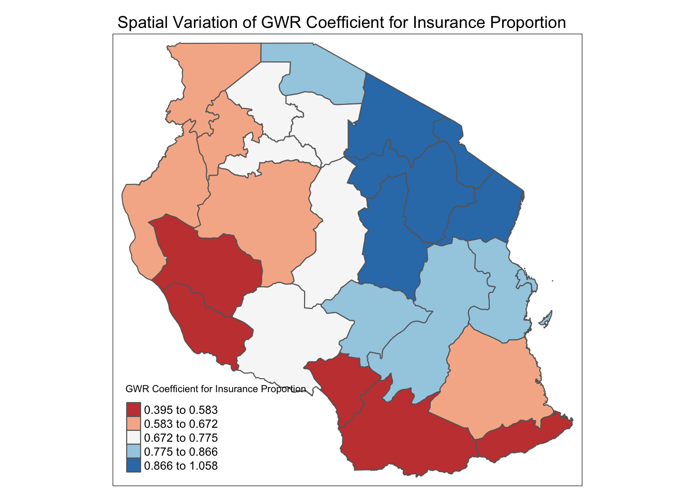
Interpretation: This map visualizes the influence of the proportion of people with insurance on the banking inclusion proportion.
Observation: The red regions indicate areas where insurance is less strongly associated with banking inclusion, whereas the blue regions show stronger positive relationships.
Implication: In areas where the association is weaker (red areas), it may be beneficial to examine barriers to integrating insurance with banking products. Conversely, regions with stronger associations (blue areas) could focus on promoting joint insurance and banking products to further financial inclusion.
Click to view code
tm_shape(combined_data) +tm_polygons("prop_SACCO_coef", title ="GWR Coefficient for SACCO Proportion",palette ="RdBu", style ="quantile") +tm_layout(main.title ="Spatial Variation of GWR Coefficient for SACCO Proportion", main.title.size =1)
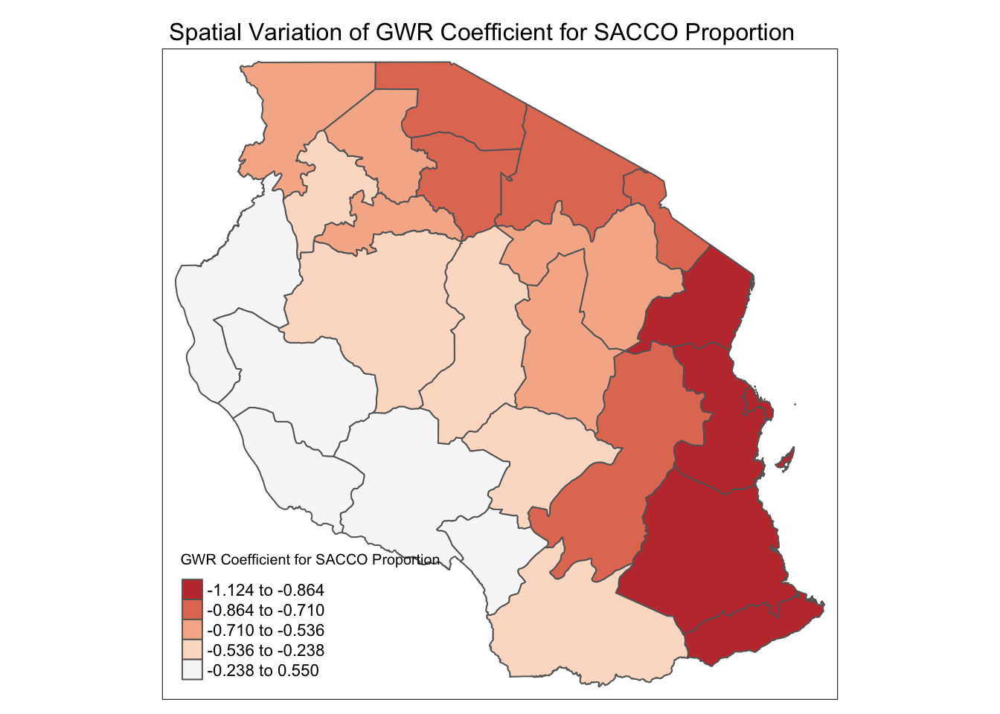
Interpretation: This map indicates the relationship between the proportion of people involved in Savings and Credit Cooperative Organizations (SACCOs) and banking inclusion.
Observation: Red regions indicate areas where SACCO participation negatively impacts banking inclusion, while lighter areas show weaker relationships. The negative values could imply that in certain regions, SACCOs might be seen as substitutes for formal banking services rather than complements.
Implication: In areas where SACCO participation negatively impacts banking inclusion, there might be opportunities to create pathways or partnerships between SACCOs and formal banks to encourage individuals to access a broader range of financial services.
Click to view code
tm_shape(combined_data) +tm_polygons("Local_R2", title ="Local R-squared",palette ="Greens", style ="quantile") +tm_layout(main.title ="Local R-squared of GWR Model", main.title.size =1)
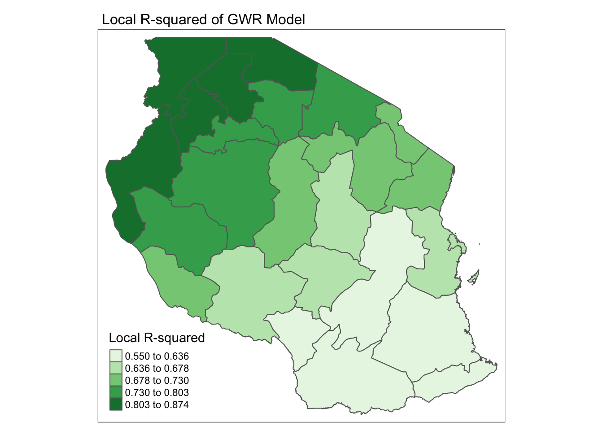
Interpretation: This map shows the local R-squared values from the GWR model, indicating how well the model explains the variability in banking inclusion in different regions.
Observation: Regions with higher R-squared values (darker green areas) have a better model fit, suggesting that the selected independent variables explain the variation in banking inclusion well in these areas. Lower R-squared areas may require additional explanatory factors.
Implication: For regions with lower R-squared values, further analysis could explore additional variables or factors influencing banking inclusion, as the current model might be missing local contextual factors in these areas.
3.3 Model Validation
We’ve already mapped local R-squared values, which give insight into how well the model fits in each region. Now, we can examine summary statistics or visualize these values to identify areas with stronger or weaker fits.
Click to view code
# Summary of Local R-squared valuessummary(gwr_results$Local_R2)
Min. 1st Qu. Median Mean 3rd Qu. Max.
0.5498 0.6427 0.7015 0.7121 0.7822 0.8742
Click to view code
# Histogram of Local R-squared valueslibrary(ggplot2)ggplot(gwr_results, aes(x = Local_R2)) +geom_histogram(binwidth =0.05, fill ="skyblue", color ="black") +labs(title ="Distribution of Local R-squared Values", x ="Local R-squared", y ="Frequency") +theme_minimal()
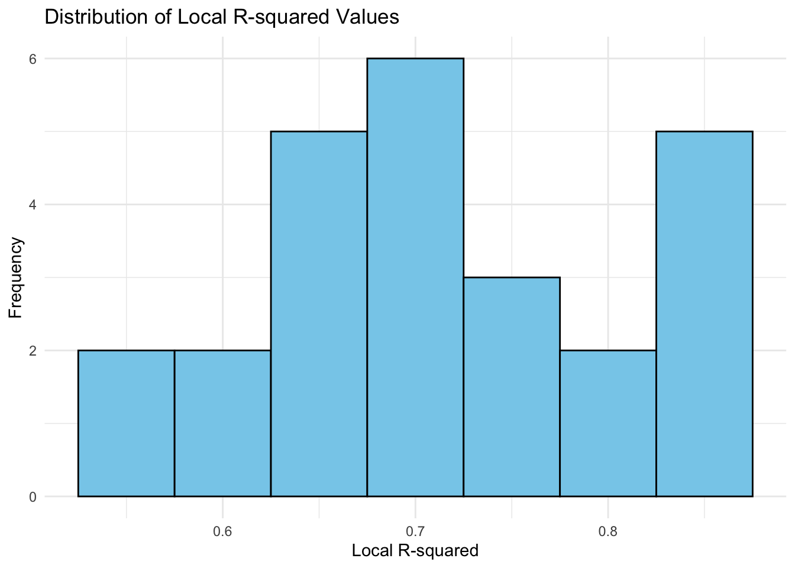
Note
Mean Local R-squared: 0.712, indicating that on average, the model explains about 71.2% of the variance in financial inclusion factors at the local level.
Median Local R-squared: 0.7015, with the first and third quartiles at 0.6427 and 0.7822, respectively. This indicates that half of the regions have a Local R-squared between approximately 0.64 and 0.78.
Residuals analysis from the GWR model can help assess where the model may underestimate or overestimate banking inclusion. Mapping residuals provides insight into potential spatial patterns in model misfit.
Click to view code
# Residual summarysummary(gwr_results$residual)
Min. 1st Qu. Median Mean 3rd Qu. Max.
-0.072437 -0.012753 0.004912 0.007246 0.021738 0.119104
Click to view code
# Adding residuals to combined_data for mappingcombined_data$residual <- gwr_results$residual# Map residualslibrary(tmap)tm_shape(combined_data) +tm_polygons("residual", title ="GWR Model Residuals", palette ="RdBu", style ="quantile") +tm_layout(main.title ="Spatial Distribution of GWR Residuals", main.title.size =1)
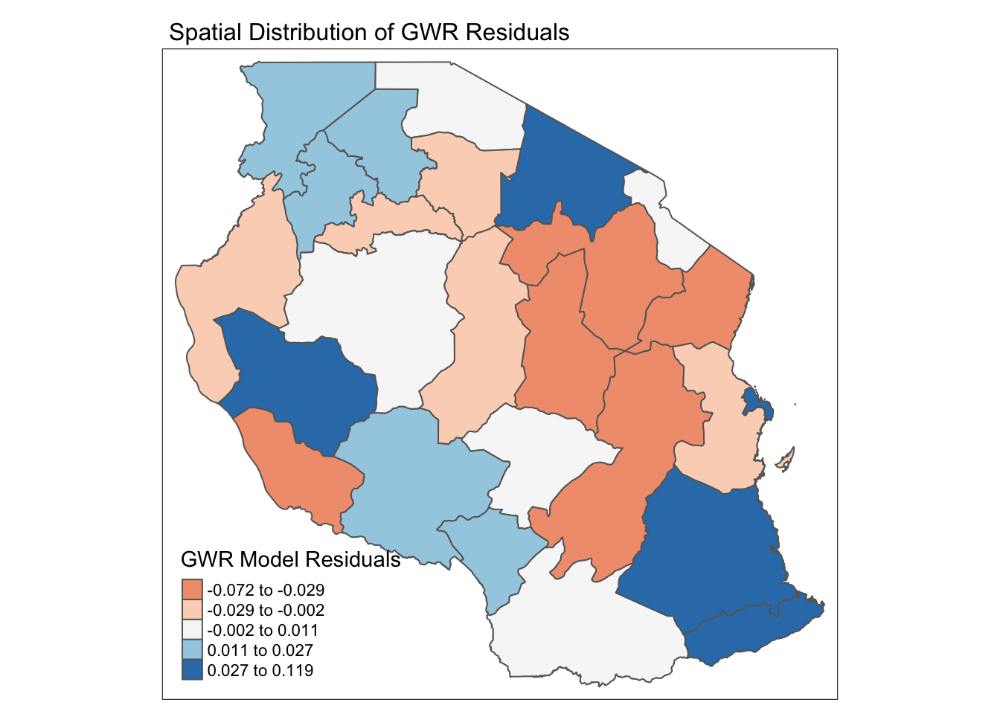
Note
Red-shaded regions: These are areas where the GWR model’s predictions are higher than observed values, indicating potential overestimation. This may suggest that the model attributes higher financial inclusion here than what exists, possibly due to a lack of local adjustment in these areas.
Blue-shaded regions: These areas have positive residuals, meaning the GWR model underestimates financial inclusion here. This underestimation may indicate unobserved local factors that enhance financial inclusion more than expected by the model’s structure.
3.4 Interpretation of T-value
We’ll look at the statistical significance of the coefficients for each predictor variable (prop_MFI, prop_INSURANCE, prop_SACCO) to understand where each factor has the strongest or weakest effect on banking inclusion.
Click to view code
# Check if T-values for each coefficient exist in gwr_results and add them to combined_datat_value_columns <-c("prop_MFI_TV", "prop_INSURANCE_TV", "prop_SACCO_TV")# Loop through each T-value column and add to combined_data if it exists in gwr_resultsfor (col_name in t_value_columns) {if (col_name %in%colnames(gwr_results)) { combined_data[[col_name]] <- gwr_results[[col_name]] } else {warning(paste("The column", col_name, "does not exist in gwr_results")) }}
tm_shape(combined_data) +tm_polygons("prop_MFI_TV", title ="T-value for MFI Proportion", palette ="RdBu", style ="fixed", breaks = t_value_breaks) +tm_layout(main.title ="Statistical Significance of MFI Coefficient", main.title.size =1)
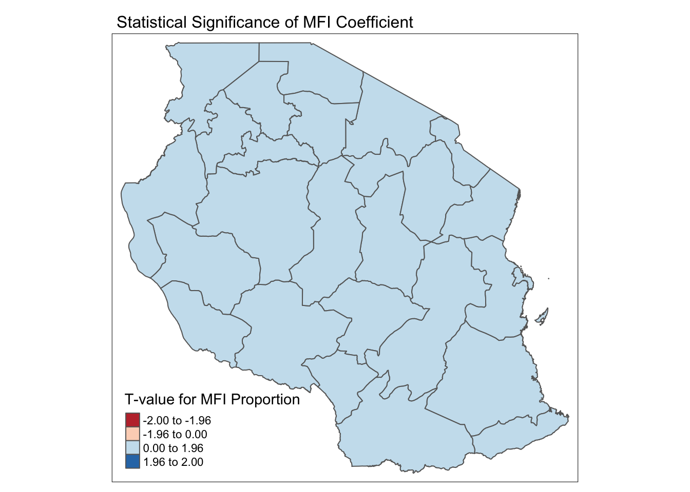
This map shows the significance of the MFI coefficient, with areas where the relationship is statistically significant highlighted in darker colors.
Regions in light colors may indicate non-significant relationships, where MFI involvement has a negligible effect on financial inclusion.
Click to view code
tm_shape(combined_data) +tm_polygons("prop_INSURANCE_TV", title ="T-value for Insurance Proportion", palette ="RdBu", style ="fixed", breaks = t_value_breaks) +tm_layout(main.title ="Statistical Significance of Insurance Coefficient", main.title.size =1)
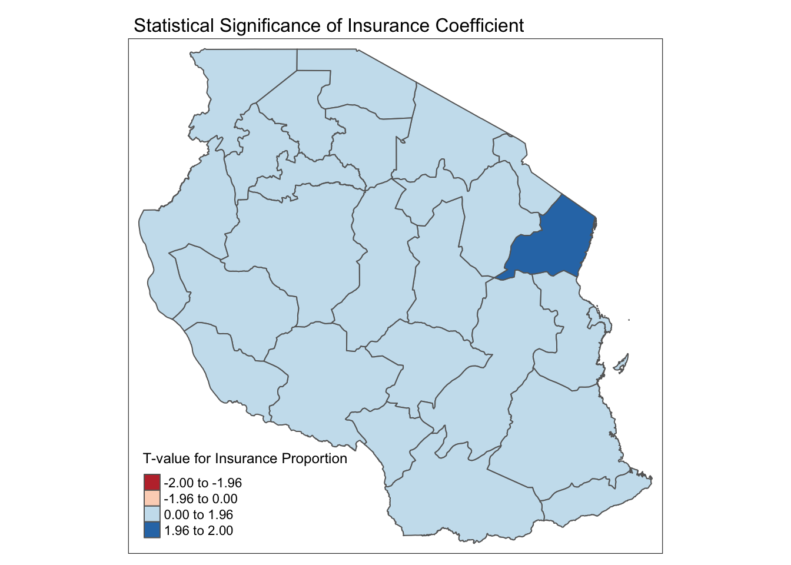
The T-value map for insurance displays the statistical significance of the relationship between insurance coverage and financial inclusion.
Areas in darker shades indicate statistically significant relationships, while lighter shades show regions where the effect of insurance on financial inclusion is not significant.
Click to view code
tm_shape(combined_data) +tm_polygons("prop_SACCO_TV", title ="T-value for SACCO Proportion", palette ="RdBu", style ="fixed", breaks = t_value_breaks) +tm_layout(main.title ="Statistical Significance of SACCO Coefficient", main.title.size =1)
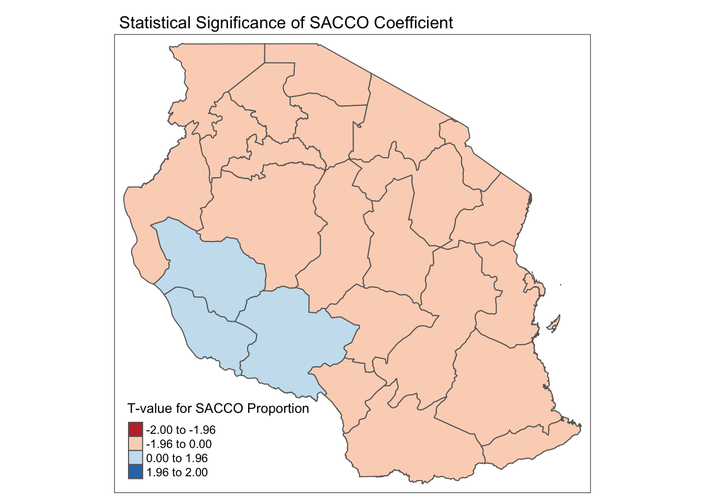
The SACCO T-value map similarly highlights the significance of the SACCO coefficient across regions.
Blue areas indicate statistically significant positive relationships, showing where SACCO membership contributes more strongly to financial inclusion.
Spatial Pattern Identification
Using Moran’s I statistic or other spatial autocorrelation tests on the residuals can help determine if there are spatial patterns in the model errors, suggesting additional factors that might need to be incorporated.
Click to view code
# Create spatial weights matrixcoords <-st_coordinates(st_centroid(combined_data))nb <-knn2nb(knearneigh(coords, k =4)) # Adjust k as necessarylistw <-nb2listw(nb, style ="W")# Calculate Moran's I for residualsmoran_test <-moran.test(combined_data$residual, listw)moran_test
Moran I test under randomisation
data: combined_data$residual
weights: listw
Moran I statistic standard deviate = 1.11, p-value = 0.1335
alternative hypothesis: greater
sample estimates:
Moran I statistic Expectation Variance
0.08998035 -0.04166667 0.01406662
Note
With a p-value of 0.1335, the test does not show statistically significant spatial autocorrelation in the residuals. This suggests that the GWR model has effectively accounted for spatial dependence in the data, leaving minimal spatial structure in the residuals. In other words, the spatial variation in financial inclusion has been reasonably well captured by the GWR model.
4 Future Work
While this analysis provides valuable insights into the spatial variability of financial inclusion in Tanzania, several additional steps could enhance the depth and utility of the findings:
Refinement of Variable Selection: Future work could include refining the independent variables used in the Geographically Weighted Regression (GWR) model by incorporating additional socio-economic, demographic, and infrastructure-related factors. For instance, variables like literacy rates, proximity to financial institutions, mobile network coverage, and GDP per capita might improve the model’s explanatory power.
Multi-Scale Geographically Weighted Regression (MGWR): Applying a Multi-Scale GWR (MGWR) could capture relationships at multiple spatial scales, allowing us to see how local versus regional dynamics affect financial inclusion. This model extension would be particularly useful in differentiating between local drivers (such as SACCO usage) and more widespread influences (like mobile money penetration).
Temporal Analysis: A longitudinal study incorporating data from previous years would provide insights into how financial inclusion patterns evolve over time. This could reveal trends and help identify the impact of past policy changes or initiatives aimed at promoting financial access.
Community-Level Analysis: Moving beyond district-level data to analyze community or ward-level patterns could provide a more granular view of financial inclusion disparities, especially in rural areas where financial service access may vary significantly within districts.
Advanced Visualization Techniques: Leveraging interactive mapping tools or dashboards could make the findings more accessible to policymakers and stakeholders, facilitating a better understanding of spatial patterns in financial inclusion and aiding in decision-making processes.
5 Summary
This study explored the spatial distribution and determinants of financial inclusion across Tanzania using Geographically Weighted Regression (GWR). The ESDA maps highlighted significant regional disparities in access to financial services, with higher banking and insurance access in urban areas and greater reliance on MFIs and SACCOs in rural regions. The GWR analysis provided spatially varying coefficients, revealing how local factors affect financial inclusion differently across regions.
Key findings indicate an urban-rural divide, with formal banking concentrated in urbanized regions while MFIs and SACCOs serve as crucial financial channels in more remote areas. Additionally, regional variations in the influence of variables like insurance and SACCO participation suggest that local socio-economic conditions play a significant role in shaping financial access.
Further work could enhance this analysis by incorporating more variables, testing spatial lag models, and applying Multi-Scale GWR to capture dynamics at various spatial scales. Conducting temporal studies, assessing policy impacts, and exploring finer spatial resolutions would deepen our understanding of financial inclusion patterns, informing targeted interventions to promote inclusive financial access across Tanzania.
Kaliba, Aloyce R ; Bishagazi, Kaihula P ; Gongwe, Anne G (2023) “Financial Inclusion in Tanzania Determinants, Barriers, and Impact”, The Journal of developing areas, Vol.57 (2), pp.65-87. SMU library e-journal.
Jana S. Hamdan, Katharina Lehmann-Uschner & Lukas Menkhoff (2022) Mobile Money, Financial Inclusion, and Unmet Opportunities: Evidence from Uganda, The Journal of Development Studies, 58:4, 671-691. SMU library e-journal.
Nguyen, Nhan Thien, et. al. (2021) “The convergence of financial inclusion across provinces in Vietnam: A novel approach”PloS one, Vol.16 (8). SMU library e-journal.